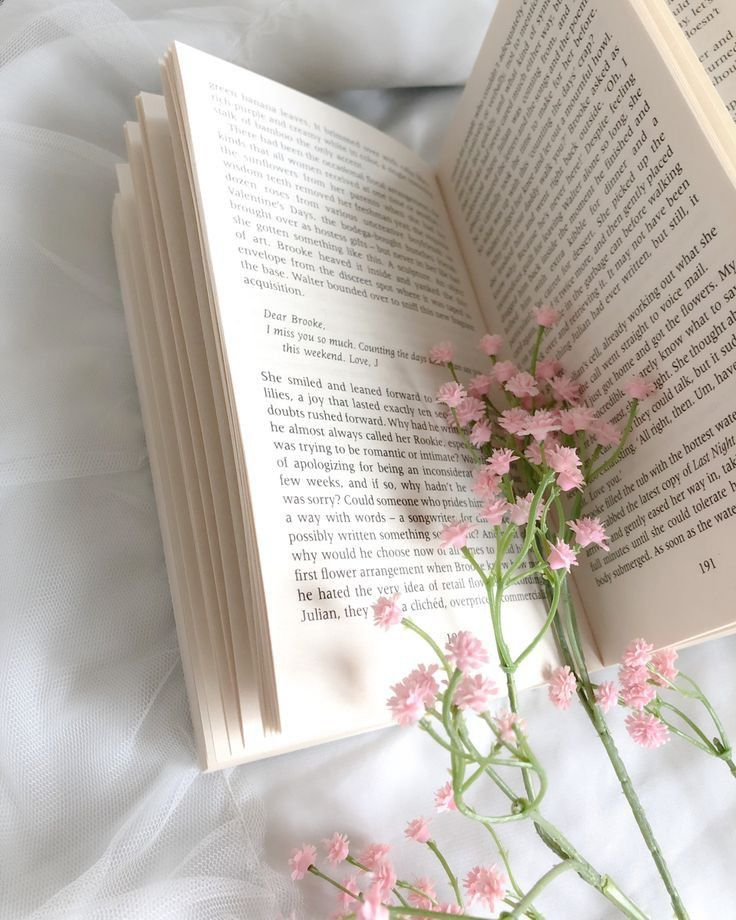

Bem-vindo ao Brumas Literárias
Entre as páginas de cada livro, onde o tempo parece suspenso e as palavras dançam como brumas ao vento, nasce o Brumas Literárias. Esta editora, composta por mulheres que carregam o amor pelos livros no coração, é mais que um espaço de publicações — é um santuário dedicado à literatura, onde cada lançamento é uma joia cuidadosamente lapidada e cada resenha, uma carta de amor à arte de contar histórias.
Aqui, mergulhamos fundo nas palavras de autoras talentosas, explorando mundos repletos de personagens femininas que são tão complexas e corajosas quanto as mulheres que as leem e escrevem. A cada novo livro que lançamos, alimentamos um sonho compartilhado de dar voz a narrativas que emocionam, inspiram e libertam. Cada resenha é escrita com a mesma paixão que sentimos ao virar as páginas de um romance pela primeira vez, capturando as nuances de histórias que exaltam a força, a vulnerabilidade e a singularidade das mulheres.
No Brumas Literárias, acreditamos que a literatura é um espelho da alma, um refúgio e, acima de tudo, um portal para universos que expandem o coração e a mente. Atravessamos o véu do cotidiano e entramos em um mundo onde o imaginário se torna real, onde o brilho das palavras resplandece como um amanhecer brumoso, suave e cheio de promessas. Venha fazer parte desse universo onde os livros são mais que palavras impressas — são destinos, histórias e emoções vivas, sempre esperando para serem descobertas.